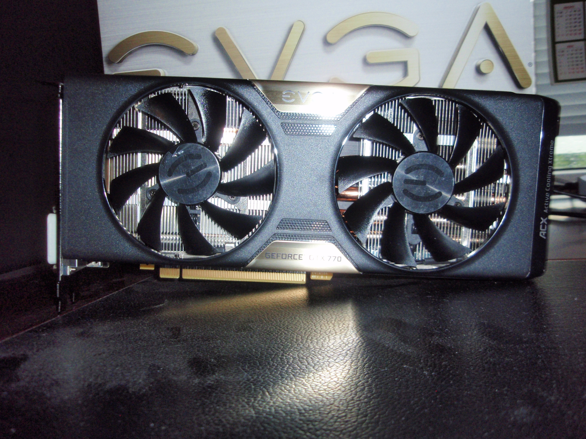
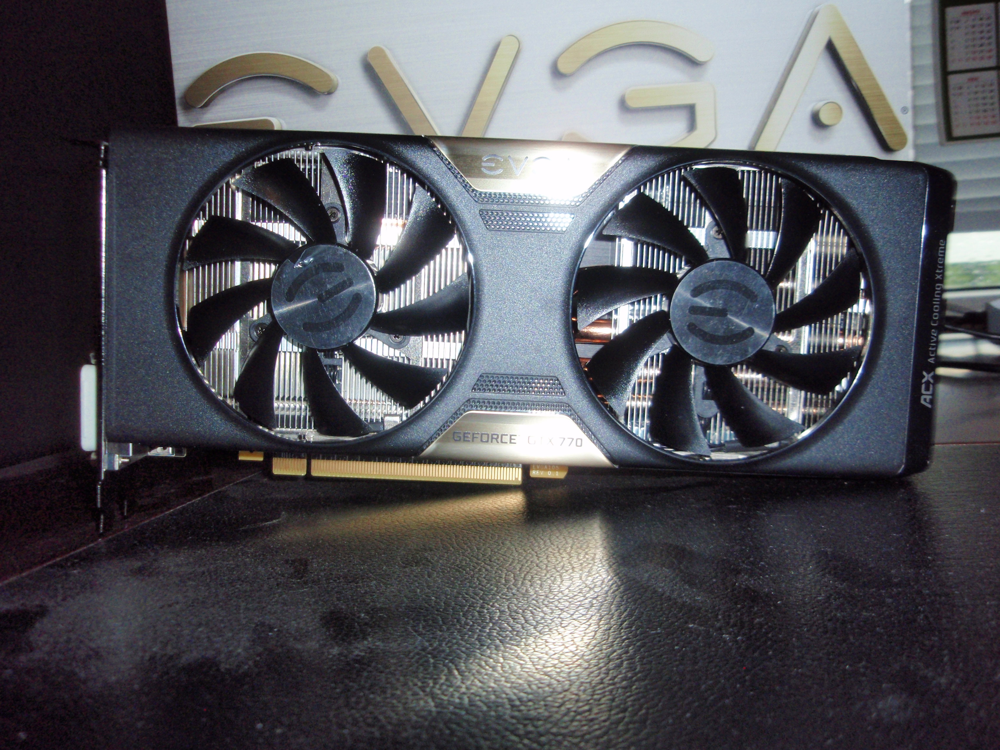

Bro PC
PC Parts
-
CPU
Intel i7 3770, 4.2GHz
-
CPU Cooler
COOLER MASTER Hyper 212 Evo
-
Motherboard
ASROCK Z77 EXTREME3
-
RAM
GEIL 2X4GB DDR3 1600 DRAGON CL11
-
GPU
EVGA GTX 770 2GB GDDR5 ACX
-
HDD
Western Digital Black 1TB
-
Case
Cooler Master HAF 912 Advanced
-
PSU
Seasonic S12 Bronze 620W 80+
This was my first high-end computer build. This one was for my brother and I was very excited.
Choosing which parts to pick up was really time consuming. I've watched and read a lot of reviews
and benchmarks for almost all of the components.
For the CPU it was straight forward - I wanted to get the maximum performance for a reasonable price at the time
(therefore excluding intel 6-core processors).
So why didn't I get a "K" CPU ? - I absolutelly would do but it was nowhere in stock, so I decided to go for the
non-K version and get a motherboard for "K" processors, because I would later overclock the non-K CPU :)
(Yes non-K CPUs can be overclocked as long as your motherboard supports it!). And since my borother wouldn't clock it to the max
I knew that the clock on the "locked" non-K would be enough.
So the stock i7 3770 was running at 3.5Ghz and turbo boost to 3.9Ghz.
I clocked it to 4.2Ghz which is enough for the moment. I probably could go a little higher, but according to intel - it is not recomended.
For some time the PC was running with the stock cooler but since I
overclocked it I decided it's time for a new cooler.
The Cooler Master Evo is one hell-of-a cooler. It is really amazing for
its price and it is a must for an entry level overclock.
With the stock cooler, under load, it was running up to about 60-67c.
With the Evo under load I see about up to 10 degrees difference - 50-60c.
I also used Arctic cooling MX-4 for thermal compound. This paste is also
one of the top on the market and I recommend it for everyone.
ASROCK is one of the brands that don't get much credit for what it is. Compared to the other brands on the market
(Asus, Gigabyte, MSI), Asrock seems to be left behind. I can tell you that Asrock is really strong manufacturer and
I suggest looking for it. I've been using Asrock on 3 computers and I didn't have problems at all.
The key things I look for, when buying a motherboard:
- How much RAM does it support ?
- Does it support SLI/Crossfire ? - I like to get SLI support always, because I am likely to get a 2nd GPU
- The organisation of SATA ports and fan headers. I usually prefer right-angled SATA ports and
fan headers near the borders of the motherboard.
 

Since my brother was on a budget, I couldn't go all out on the computer case but still I wanted it to be comfortable to work with,
to be customizable and to have good airflow. CM HAF-912 is the perfect entry level enthusiast case, it has room for cable management,
it has support for top-mounted radiator (240mm, however there might be needed some modding if it conflicts with the motherboard).
I removed one of the HDD/SSD cages, to improve the airflow but it shows a gap where you can see the cables running at the back.
It doesn't bother me that much, with more time maybe I can improve more the cable management.
Another good choice for a case is Fractal Dfine R4. Made for silence, it has better dust filters, but it lacks the same airflow as the HAF.
I've always wanted to try a video card from EVGA and I spent quite a time in the GPUs section. The GPU boost Core clock is 1150Mhz.
The other brands like Asus, Gigabyte and MSI were also good and it was a matter of personal choice. I haven't done overclocking yet, because my brother didn't need it, but I might just do it for the sake of seeing how far can it go.
As I didn't include SSD in the system, my choice of HDD was WD Black, because it would be used as a system and data disk.
Western Digital Black is one of the more reliable and fast 7200rpm HDDs on the market (and very loud too :) don't worry, its not dying, its just what it is).
This PC build would be used mostly for gaming so I went for the cheapest 8GB RAM I could get (remember this build was on a budged). Really the speed of the RAM does not improve the gameplay at all. I doubt you will even notice it. Also at some point you start to feel the diminishing return. I was surprisingly pleased with GEIL. I had no problems at all with that RAM and it was the first time I used it.
When it comes to power supplies there is one brand for me - Seasonic.
These guys make really quality power supplies, high quality capacitors. Very stable as a whole.
Well it is not modular, and you can see unused cables laying around, but if that's not a big problem - go for it.
Of course there are other good brands out there but I prefer Seasonic as they proved to be what they are.
The power supply is really one of the most important parts in a PC, but many people save money from it - WRONG! VERY WRONG!
The CPU is the PC brain, the PSU is its heart. If your power supply dies, it can get with it some of your parts or all of them.
Plans for future upgrades:
- SSD is very likely to be added